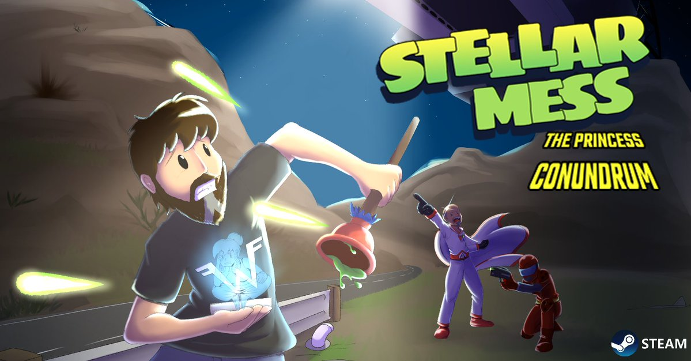
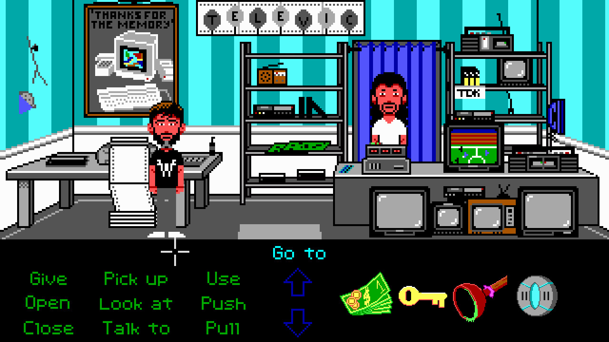

Steam bất ngờ tặng miễn phí một tựa game, review "rất tích cực" cho người dùng
Các game thủ nên nhanh tay nhận ngay trò chơi miễn phí này trên Steam.
Steam đã mang tới rất nhiều những bom tấn, siêu phẩm và trò chơi chất lượng trong tháng 2 cho người dùng.
Thế nhưng bên cạnh những phần quà đó, Steam cũng tiếp tục báo thêm một tin vui không nhỏ cho các game thủ. Đó là việc người dùng của nền tảng này có thể nhận miễn phí một trò chơi với đánh giá rất tích cực trong thời gian giới hạn.

Tựa game ấy mang tên Stellar Mess: The Princess Conundrum (Chapter 1) chỉ bằng việc đăng nhập tài khoản, tìm trò chơi trong cửa hàng rồi nhận miễn phí.
Mặc dù là một tựa game khá mơ hồ, thế nhưng đánh giá của người dùng Steam dành cho Stellar Mess đang ở mức rất tích cực. Thế nên, đây chắc chắn là món quà mà các game thủ không nên bỏ lỡ. Được phát triển và phát hành bởi Tibba Games, Stellar Mess: The Princess Conundrum (Chapter 1) là một trò chơi phiêu lưu trỏ 2D lấy cảm hứng từ các tác phẩm kinh điển của thể loại này.
Theo phong cách trỏ và nhấp điển hình, người chơi sẽ điều hướng thế giới trong Stellar Mess thông qua việc giải các câu đố và tương tác với nhiều vật thể khác nhau. Lấy bối cảnh năm 1991, Stellar Mess đưa người chơi vào vai chủ cửa hàng truyện tranh Diego, người theo đuổi các thuyết âm mưu xung quanh loạt phim nổi tiếng trong trò chơi Stellar Battle . Diego sớm được giao nhiệm vụ giải cứu Công chúa Lanor khỏi các bộ phim.
Stellar Mess được miễn phí trên Steam có thể là một động thái chiến lược của Tibba Games. Như đã nói, Stellar Mess: Operation Kush (Chapter 2) đang trong quá trình phát triển tích cực, hiện được liệt kê là "Sắp ra mắt" trên Steam. Bằng cách tặng Stellar Mess miễn phí, Tibba Games có khả năng tạo ra những người hâm mộ mới sẵn sàng đón nhận phần thứ hai khi nó ra mắt, bất kể khi nào.